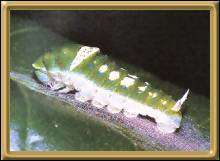
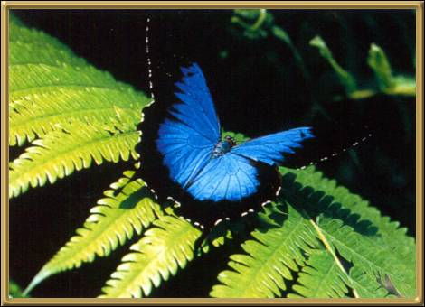

Photographs courtesy of: Lepidoptera Larvae of Australia
I remember being absolutely stunned by the beauty of this butterfly when I first saw it up in the Atherton Tablelands of Queensland. It still remains one of my favourites. It seems that the male butterfly is very attracted to blue objects.